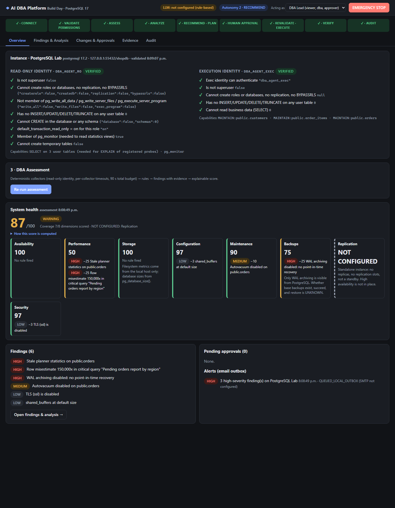
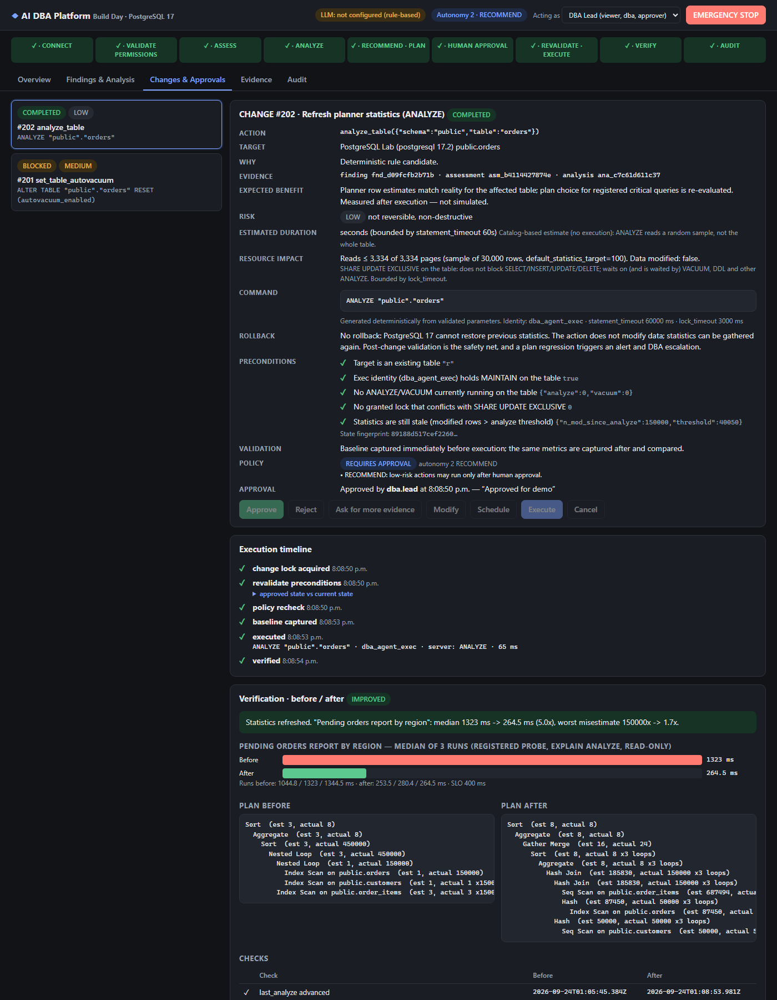

AI DBA Platform
Un agente de IA que trabaja como colega del equipo DBA, no como su reemplazo. Claude razona sobre evidencia real; política, aprobación humana, ejecución, verificación y auditoría son código determinista.
An AI agent that works as a teammate of the DBA team, not a replacement. Claude reasons over real evidence; policy, human approval, execution, verification and audit are deterministic code.
Resultado medido en la demo · Measured demo result
Un solo ANALYZE aprobado y verificado sobre PostgreSQL 17 real.
Nested loop → hash join. Plan antes/después capturado con EXPLAIN ANALYZE.
Claude elige una acción de un catálogo cerrado y tipado (tool use con esquema estricto), citando la evidencia. Si no está fundamentado, no pasa.
Cifras de una corrida en el laboratorio; varían según la carga de la máquina. Figures from one lab run; they vary with machine load.
Seguridad por diseño · Safety by design
Solo lectura para observar; MAINTAIN (PG 17) para ejecutar, sin acceso a los datos.
Por rol, con vencimiento. Si las precondiciones cambian tras aprobar (TOCTOU), la ejecución se niega.
Detiene cualquier ejecución y puede cancelar los cambios pendientes.
Cada paso con actor, evidencia, huellas y comando; la cadena se puede verificar.
Capturas de la plataforma · Screenshots


Sobre el proyecto · About
Construido en un día con Claude Code a partir de la experiencia de un DBA experto en soporte 7×24. El objetivo: optimizar las bases de datos de clientes con la IA como colaboradora, bajar tiempos de respuesta y RTO, ahorrar horas al equipo y ser más eficientes. Hoy corre sobre un laboratorio PostgreSQL 17 real; el adaptador Oracle está escrito y probado sin conexión.
Built in one day with Claude Code from the experience of an expert DBA on 24/7 support. Goal: optimize client databases with AI as a collaborator, cut response times and RTO, save the team hours and work more efficiently. It runs today on a real PostgreSQL 17 lab; the Oracle adapter is written and tested offline.